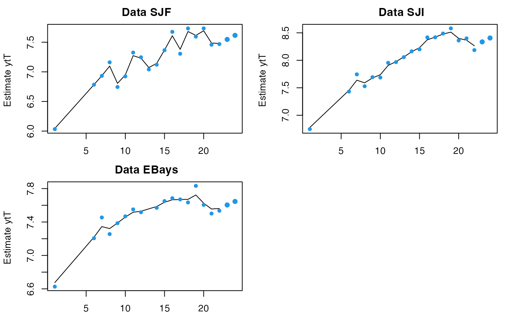
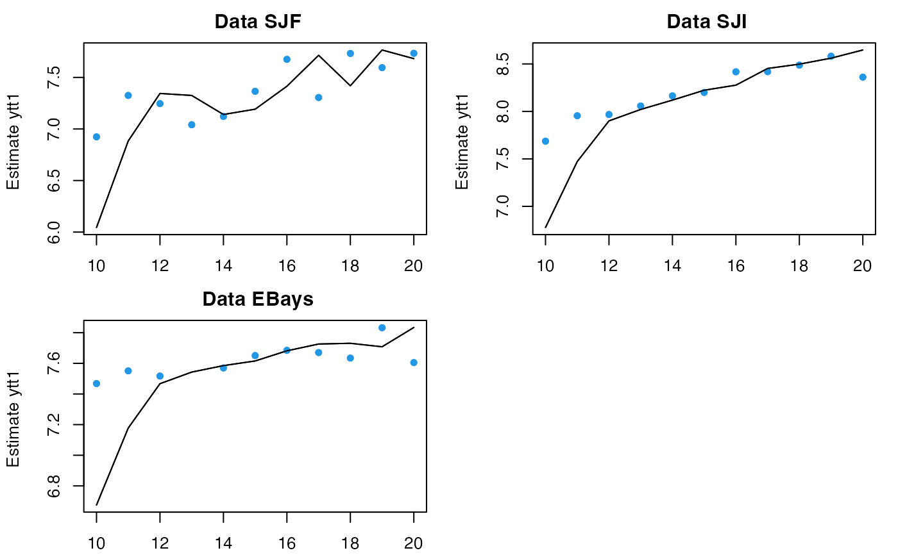
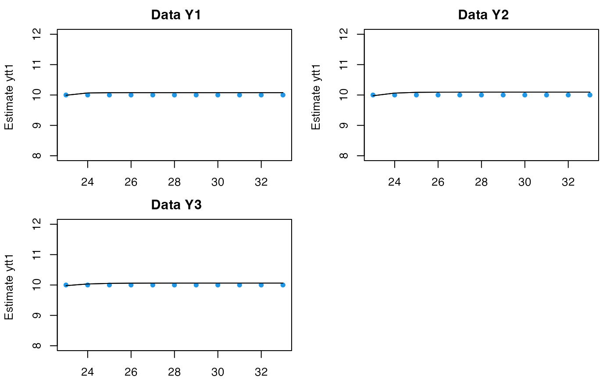
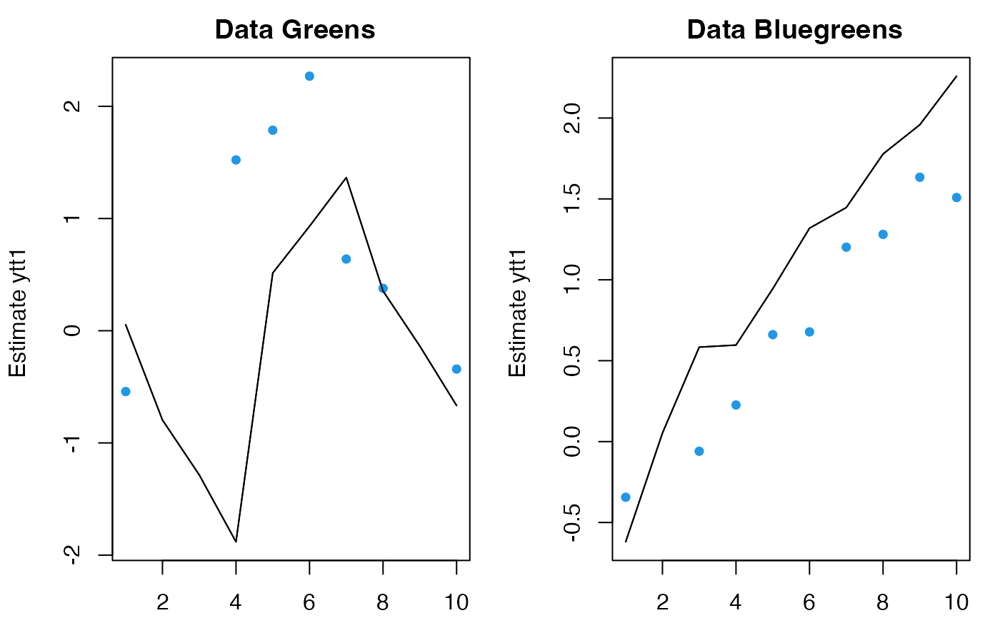
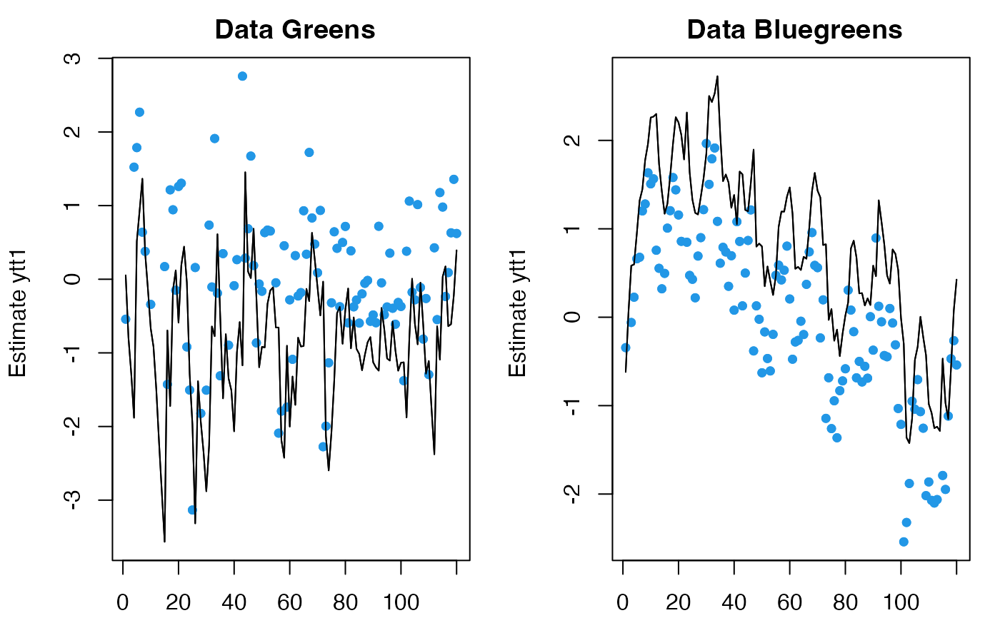
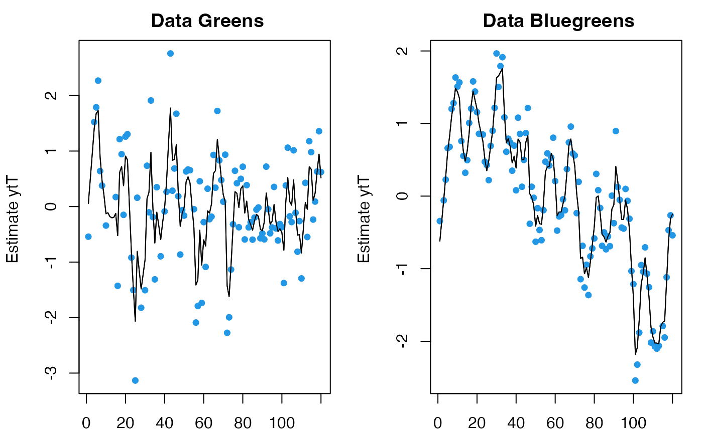
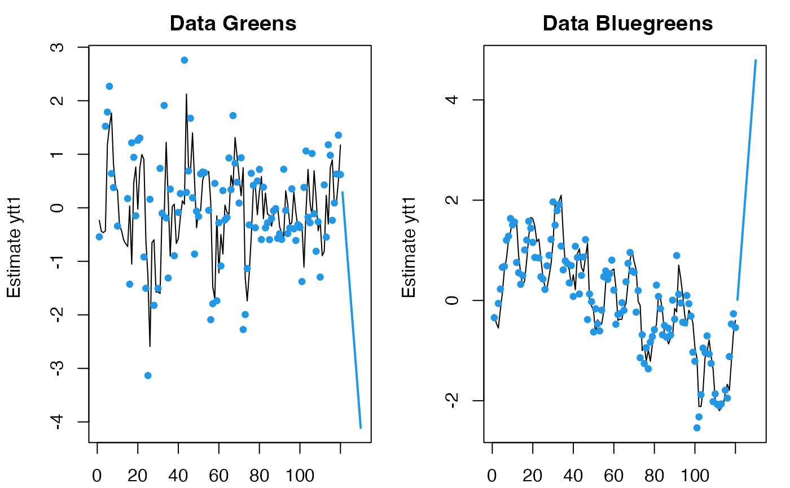
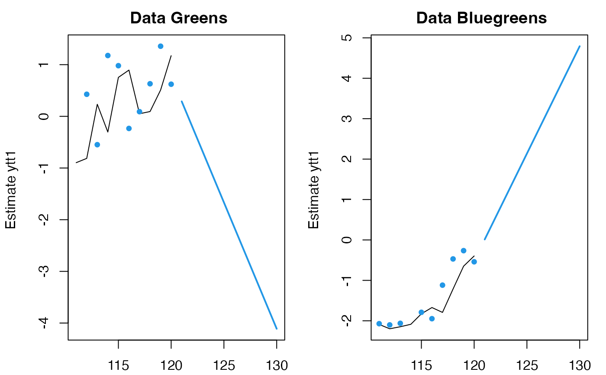

predict and forecast MARSS MLE objects
predict_marssMLE.RdThis function will return the modeled value of \(\mathbf{y}_t\) or \(\mathbf{x}_t\) conditioned on the data (either the data used to fit the model or data in newdata). For \(\mathbf{y}_t\), this is \(\mathbf{Z}_t \mathbf{x}_t^T+\mathbf{a}_t+\mathbf{D}_t\mathbf{d}_t\). For \(\mathbf{x}_t\), this is \(\mathbf{B}_t \mathbf{x}_{t-1}^T+\mathbf{u}_t+\mathbf{C}_t\mathbf{c}_{t}\). \(\mathbf{x}_t^T\) is the smoothed state estimate at time \(t\) conditioned on all the data (either data used to fit the model or the optional data passed into newdata).
If you want the estimate of \(\mathbf{x}_t\) conditioned on all the data (i.e. output from the Kalman filter or smoother), then use tsSmooth(). Note that the prediction of \(\mathbf{x}_t\) conditioned on the data up to time \(t\) is not provided since that would require the estimate of \(\mathbf{x}_t\) conditioned on data 1 to \(t+1\), which is not output from the Kalman filter or smoother.
If h is passed in, predict(object) will return a forecast \(h\) steps past the end of the model data. predict(object) returns a marssPredict object which can be passed to plot() or ggplot2::autoplot()for automatic plotting of predictions and forecasts with intervals.
Arguments
- object
A
marssMLEobject.- n.ahead
Number of steps ahead to forecast. If
n.ahead !=0, thennewdatais for the forecast, i.e. for the n.ahead time steps after the end of the model data. See details.- level
Level for the intervals if
interval != "none".- type
ytT,yttorytt1: predictions for the observations based on the states estimate at time \(t\) conditioned on all the data, data up to \(t\) or data up to \(t-1\).xtTorxtt1: predictions for the states at time \(t\) based on the states estimate at time \(t-1\) conditioned on all the data or data up to \(t-1\). The data are the data used to fit the model unlessyis passed in innewdata.- newdata
An optional list with new
y(data),cord(covariates) to use for the predictions or forecasts.y,cordmust have the same structure (matrix dimensions) as used in theMARSS()call but the number of time steps can be different.tis used if there is ambuiquity as to which time steps thenewdatarefer to. See examples and details.- interval
If
interval="confidence", then the standard error and confidence intervals of the predictions are returned. Ifinterval="prediction", prediction intervals are returned. Seefittedfor a discussion of the intervals.- fun.kf
Only if you want to change the default Kalman filter. Can be ignored.
- x0
If "reestimate" (the default), then the initial value for the states is re-estimated. If
"use.model", then the initial values in the fitted model (object) are used. If you change the data, then this initial condition may not be appropriate. You can also pass in a newx0to use. It must be a matrix that is the same dimensions asx0in the model.x0is ignored ifh!=0since in that case a forecast is being done. See example.- ...
Other arguments. Not used.
Value
A list with the following components:
- method
The method used for fitting, e.g. MARSS kem.
- model
The
marssMLEobject passed into predict().- newdata
The
newdatalist if passed in.- level
The confidence or prediction intervals
level.- pred
A data frame the predictions or forecasts along with the intervals.
- type
The
typepassed in.- t
The time steps in the pred data frame.
- n.ahead and h
The number of forecast time steps.
- x0
The x0 used for the predictions.
- tinitx
The tinitx used.
The pred data frame has the following columns:
- .rownames
Names of the data or states.
- t
Time step.
- y
The data if
typeis"ytT","ytt"or"ytt1".- xtT
The estimate of \(\mathbf{x}_t\) conditioned on all the data if
type="xtT". FromtsSmooth().- xtt
The estimate of \(\mathbf{x}_t\) conditioned on the data 1 to \(t\) if
type="xtt1". FromtsSmooth().- estimate
Model predicted values of observations (\(\mathbf{y}\)) or the states (\(\mathbf{x}\)). See details.
If intervals are returned, the following are added to the data frame:
- se
Standard errors of the predictions.
- Lo ...
Lower confidence level at
alpha = 1-level. The interval is approximated using qnorm(alpha/2)*se + prediction.- Hi ...
Upper confidence level. The interval is approximated using qnorm(1-alpha/2)*se + prediction.
Details
Forecasts n.ahead != 0
The type="xtT" forecast is the states forecast conditioned on all the data. If n.ahead !=0, then 'data' that is being conditioned on is the original data (model data) plus any data in newdata$y for the h forecast time steps. Note, typically forecasts would not have data, since they are forecasts, but predict.marssMLE() allows you to specify data for the forecast time steps if you need to. If the model includes covariates (\(\mathbf{c}\) and/or \(\mathbf{d}\) matrices passed into the model list in the MARSS() call), then c and/or d must be passed into newdata.
The type="ytT" forecast is the expected value of NEW data (\(\mathbf{Y}\)) conditioned on the data used for fitting. The data used for fitting is the same as for type="xtT" (above). The \(\mathbf{y}\) forecast is Z xtT[,T+i] + A + D d[,T+i].
If the model has time-varying parameters, the value of the parameters at the last time step are used for the forecast.
Model predictions n.ahead == 0
If newdata is not passed in, then the model data (\(\mathbf{y}\)) and \(\mathbf{c}\) and \(\mathbf{d}\) (if part of model) are used for the predictions. fitted(object, type="ytT") is the internal function for model predictions in that case.
If newdata is passed in, then the predictions are computed using newdata but with the MARSS model estimated from the original data, essentially the Kalman filter/smoother is run using the estimated MARSS model but with data (and \(\mathbf{c}\) and \(\mathbf{d}\) if in the model) in newdata. y, c and d in the newdata list must all have the same number of columns (time-steps) and the length of t in newdata must be the same as the number of columns and must be sequential.
For type="ytT", the predictions are conceptually the same as predictions returned by predict.lm for a linear regression. The confidence interval is the interval for the expected value of NEW data. The prediction interval is the interval for NEW data. Prediction intervals will always be wider (or equal if R=0) to confidence intervals. The difference is that the uncertainty in predict.lm comes from parameter uncertainty and the data error while in predict.marssMLE, the uncertainty is from \(\mathbf{x}\) uncertainty and data error. Parameter uncertainty does not enter the interval calculations; parameters are treated as known at their point estimates. This is not specific to the MARSS package. This is how prediction and confidence intervals are presented for MARSS models in the literature, i.e. no parameter uncertainty.
tinnewdata: If the model has time-varying parameters,tinnewdataremoves any ambiguity as to which parameter values (time steps) will be used for prediction. In this case,tspecifies which time values of the parameters you want to use. If you leave offt, then it is assumed thattstarts at the first time step in the data used to fit the original model. If the model is time-constant,tis used to set the time step values (used for plotting, etc.).The model has \(\mathbf{c}\) and/or \(\mathbf{d}\):
cand/ordmust be included innewdata. Ify(new data) is not innewdata, it is assumed to be absent (all NA). That is, the default behavior ifyis absent butcand/ordis present isy="none". If you want to use the original data used to fit the model, then pass iny="model"innewdata. Pass intinnewdataif it is ambiguous which time steps of the model data to use.The model has time-varying parameters: You have to pass in
tinnewdatato specify what parameter values to use. If any \(t > T\) (\(T\) equals the last time step in the model data), then it is assumed that you want to use the parameter values at the last time step of the original time series for values beyond the last time step. See examples.y,canddinnewdatahave more time steps than the original data: If the model has time-varying parameters, you will need to pass int. If the model is time-constant, thentis assumed to start at the first time step in the original data but you can pass intto change that. It will not change the prediction, but will change the t column in the output.
x0 estimation If you are passing in y in newdata, then it is likely that you will need to re-estimate the \(\mathbf{x}\) initial condition. The default behavior of predict.marssMLE. Use x0 = "use.model" to use the initial values in the estimated model (object).
Examples
dat <- t(harborSealWA)
dat <- dat[2:4,] #remove the year row
fit <- MARSS(dat, model=list(R="diagonal and equal"))
#> Success! abstol and log-log tests passed at 44 iterations.
#> Alert: conv.test.slope.tol is 0.5.
#> Test with smaller values (<0.1) to ensure convergence.
#>
#> MARSS fit is
#> Estimation method: kem
#> Convergence test: conv.test.slope.tol = 0.5, abstol = 0.001
#> Estimation converged in 44 iterations.
#> Log-likelihood: 17.84491
#> AIC: -15.68982 AICc: -10.45173
#>
#> Estimate
#> R.diag 0.00582
#> U.X.SJF 0.06833
#> U.X.SJI 0.07084
#> U.X.EBays 0.04221
#> Q.(X.SJF,X.SJF) 0.04150
#> Q.(X.SJI,X.SJI) 0.01271
#> Q.(X.EBays,X.EBays) 0.00807
#> x0.X.SJF 5.97602
#> x0.X.SJI 6.70656
#> x0.X.EBays 6.63306
#> Initial states (x0) defined at t=0
#>
#> Standard errors have not been calculated.
#> Use MARSSparamCIs to compute CIs and bias estimates.
#>
# 2 steps ahead forecast
fr <- predict(fit, type="ytT", n.ahead=2)
plot(fr)

# use model data with the estimated initial values (at t=0) for
# initial values at t=9
# This would be a somewhat strange thing to do and the value at t=10 will look wrong.
fr <- predict(fit, newdata=list(t=10:20, y=dat[,10:20]), x0 = "use.model")
plot(fr)

# pass in new data and give it new t; initial conditions will be estimated
fr <- predict(fit, newdata=list(t=23:33, y=matrix(10,3,11)))
plot(fr, ylim=c(8,12))

# Covariate example
fulldat <- lakeWAplanktonTrans
years <- fulldat[,"Year"]>=1965 & fulldat[,"Year"]<1975
dat <- t(fulldat[years,c("Greens", "Bluegreens")])
dat <- zscore(dat)
covariates <- rbind(
Temp = fulldat[years, "Temp"],
TP = fulldat[years, "TP"])
covariates <- zscore(covariates)
A <- U <- "zero"
B <- Z <- "identity"
R <- diag(0.16,2)
Q <- "equalvarcov"
C <- "unconstrained"
model.list <- list(B=B,U=U,Q=Q,Z=Z,A=A,R=R,C=C,c=covariates)
fit <- MARSS(dat, model=model.list)
#> Success! abstol and log-log tests passed at 27 iterations.
#> Alert: conv.test.slope.tol is 0.5.
#> Test with smaller values (<0.1) to ensure convergence.
#>
#> MARSS fit is
#> Estimation method: kem
#> Convergence test: conv.test.slope.tol = 0.5, abstol = 0.001
#> Estimation converged in 27 iterations.
#> Log-likelihood: -267.8293
#> AIC: 551.6585 AICc: 552.3346
#>
#> Estimate
#> Q.diag 0.2817
#> Q.offdiag 0.0648
#> x0.X.Greens -0.2370
#> x0.X.Bluegreens -0.1712
#> C.(X.Greens,Temp) -0.0512
#> C.(X.Bluegreens,Temp) 0.1004
#> C.(X.Greens,TP) -0.0466
#> C.(X.Bluegreens,TP) 0.0058
#> Initial states (x0) defined at t=0
#>
#> Standard errors have not been calculated.
#> Use MARSSparamCIs to compute CIs and bias estimates.
#>
# Use a new c (covariate) but no data.
fr <- predict(fit, newdata=list(c=matrix(5,2,10)), x0="use.model")
#> predict.marssMLE(): prediction is not conditioned on any data, only c or d covariates.
plot(fr)
# Use first 10 time steps of model data
plot(predict(fit, newdata=list(y=dat[,1:10], c=matrix(5,2,10))))

# Use all model data but new covariates
# Why does it look so awful? Because this is a one-step ahead
# prediction and there is no info on what the c will be at t
plot(predict(fit, newdata=list(y=dat, c=matrix(5,2,120))))

# Use all model data but new covariates with ytT type
# this looks better because is uses all the c data to estimate (so knows what c is at t and beyond)
plot(predict(fit, newdata=list(y=dat, c=matrix(5,2,120)), type="ytT"))

# Use no data; cannot estimate initial conditions without data
# so x0 must be "use.model"
fr <- predict(fit, newdata=list(c=matrix(5,2,22)), x0="use.model")
#> predict.marssMLE(): prediction is not conditioned on any data, only c or d covariates.
plot(fr)
# forecast with covariates
# n.ahead and the number column in your covariates in newdata must match
plot(predict(fit, newdata=list(c=matrix(5,2,10)), n.ahead=10))

# forecast with covariates and only show last 10 steps of original data
plot(predict(fit, newdata=list(c=matrix(5,2,10)), n.ahead=10), include=10)
